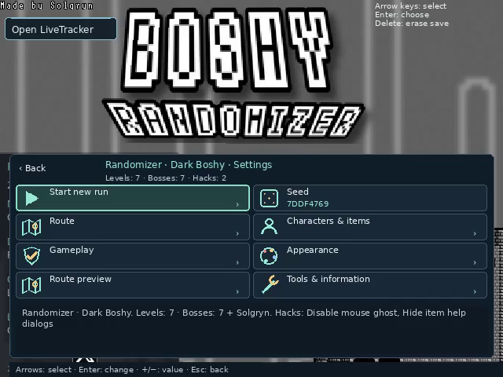
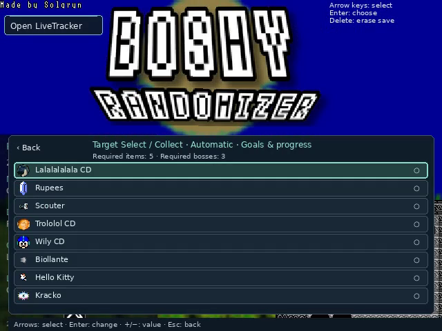
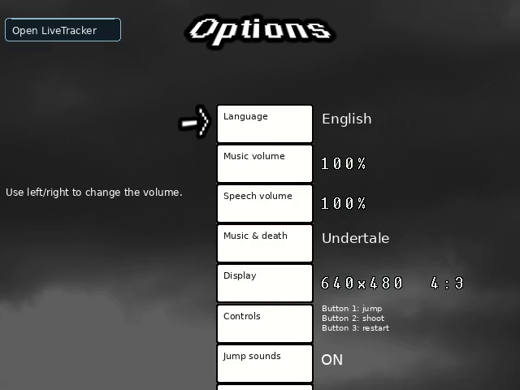
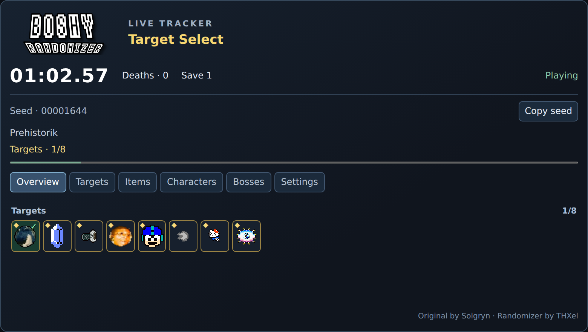
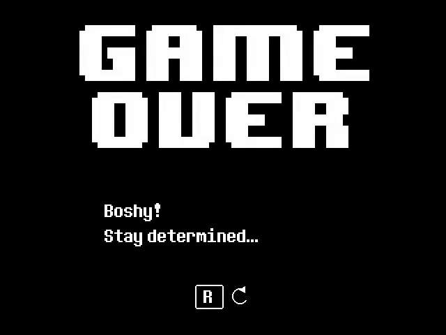

Nuevos caminos por Boshy
Mezcla niveles, jefes y rutas secretas. Tú eliges cuáles entran.
 GitHub ↗
GitHub ↗Redescubre Boshy. Una nueva aventura con cada semilla.
Los mundos y jefes de Boshy en otro orden, con sorpresas en cada cofre. Prepara tu partida y compártela con amigos.
Primera versión final · en preparación
La primera versión final está cerca →
Necesitas tu propia carpeta o ZIP de Boshy. El juego original no está incluido.
Descargar I Wanna Be The Boshy desde Grynsoft ↗
Cómo será la instalación →
La primera versión final llegará pronto. Aquí tienes un adelanto.
Prepara tu partida, elige tus objetivos y empieza a jugar.



Sorpréndeme
Niveles, jefes y cofres mezclados, con Solgryn al final.
Dame objetivos para recoger
Encuentra los objetos y vence a los jefes indicados para llegar a Solgryn.
Seguir la ruta original
Juega la ruta original con tus extras opcionales favoritos.
Solo los jefes
Un jefe tras otro. Tú eliges a quién enfrentarte.
Principalmente plataformas
Supera los niveles que elijas y termina contra Solgryn.
Mezcla niveles, jefes y rutas secretas. Tú eliges cuáles entran.
¿Un objeto o un personaje nuevo? Ábrelo y descúbrelo.
Comparte tu semilla con amigos y competid en la misma ruta.
Una para practicar, otra para competir y otra para el caos. Continúa donde lo dejaste.
Tiempo, muertes y objetos en LiveTracker, también para tu stream.
Llega al combate final y comprueba cómo te ha ido.
Tiempo, muertes, objetos y objetivos: junto al juego o en OBS. Abre LiveTracker desde el menú del juego.

Mundos conocidos con otros fondos, colores y sprites. Tú decides cuánto caos quieres.
Deja que cambien tus disparos y mezcla la banda sonora.
Elige la música original o Undertale. Los packs opcionales de Kamilia 3 y WannaFest22 incluyen su música y sus pantallas de muerte.
Elige extras opcionales en el menú para practicar o cambiar el desafío.
Haz clic para verlo.



Primera versión final · en preparación
Windows · x64
Linux Mint 22 / Ubuntu 24.04 · X11 · amd64
Necesitas tu propia carpeta o ZIP de Boshy. El juego original no está incluido.
Descargar I Wanna Be The Boshy desde Grynsoft ↗
Para la primera versión final necesitarás tu propio ZIP o carpeta original de Boshy. El juego original no está incluido.
Descarga y abre Windows Setup. Sigue el asistente para instalar Boshy Randomizer.
En el asistente, selecciona tu ZIP o carpeta original de Boshy. El randomizer crea su propia copia del juego.
Elige una de las tres ranuras, selecciona un modo y comienza la partida.
Abre el DEB con el instalador de paquetes e instala sus dependencias, incluidos Wine y Lutris.
Abre Boshy Randomizer desde el menú de aplicaciones. Espera a que termine la configuración de Wine y selecciona tu carpeta o ZIP original de Boshy.
Elige ranura y modo. Para futuras partidas, vuelve a abrir Boshy Randomizer desde el menú de aplicaciones.
El randomizer crea su propia copia del juego. El original y sus partidas quedan separados.
Sí. Abre el LiveTracker integrado desde el menú del juego y úsalo en el navegador o como fuente de navegador en OBS.
Abre el diagnóstico en el menú del juego e incluye modo, semilla y una descripción del problema en GitHub.
Por ahora, THXel es el único que ha probado el juego. Las últimas pruebas antes de la primera versión final están en marcha.
La primera versión final está en preparación. Windows Setup y Linux DEB aparecerán aquí cuando esté lista. Aún no hay fecha confirmada.
Es un randomizer para un jugador. El antiguo menú online está desactivado. Comparte semillas para jugar rutas comparables con amigos.
¿Tienes una pregunta o una idea? Compártela en GitHub.
Compartir pregunta o idea ↗